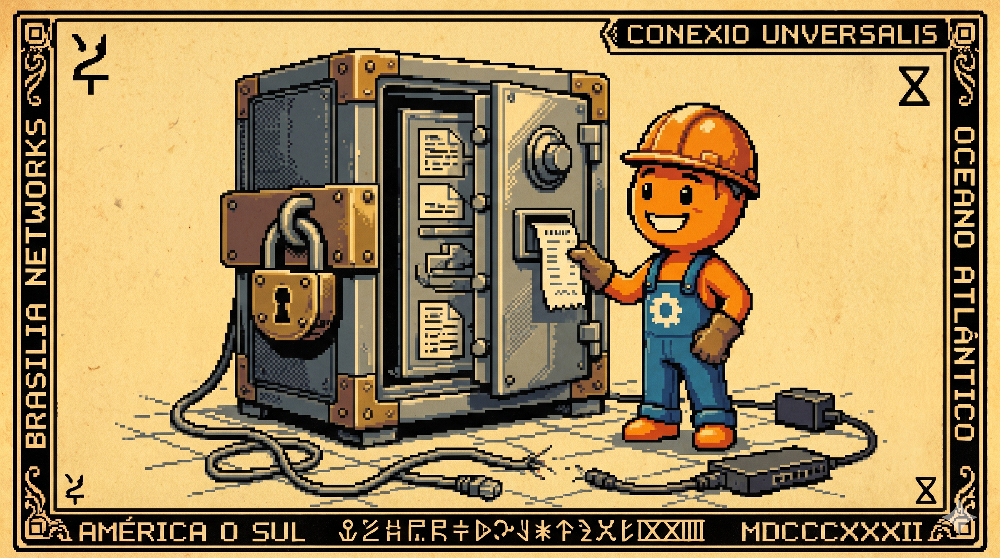

Canto VI: A Peleja da Transmissão Resiliente
A rede piscou e o sinal deu adeus pro sertão,
Se o envio for síncrono, a venda cai logo no chão.
Mas guardamos no cofre do Outbox com muito primor,
Se a rede falhar, não se altera o humor!
A transação salva local, o dinheiro está garantido,
E o envio da fila depois é com calma gerido.

O que é Transmissão Resiliente?
Definimos Transmissão Resiliente como a capacidade técnica de garantir a entrega íntegra e atômica de transações de negócios entre nós descentralizados (caixas físicos) e a nuvem central, mesmo sob condições severas de instabilidade de sinal de rede, sem nunca paralisar a interface do operador e sem duplicar ou perder registros de vendas.
O Perigo do Envio Síncrono Distribuído
A maioria dos sistemas comerciais comete um erro primário de arquitetura: tenta bater na API do servidor central durante a finalização da compra pelo operador de caixa (comunicação síncrona). Se a conexão de internet sofrer uma micro-oscilação de 1 segundo naquele exato instante, o sistema trava ou lança um erro genérico na tela, deixando o operador na dúvida se a venda foi gravada ou não.
Fazer chamadas de rede diretas dentro de transações de negócio locais acopla o tempo de resposta do caixa à latência física da internet. No varejo brasileiro de interior, com conexões de rádio ou 4G inconstantes, esse acoplamento síncrono inviabiliza a operação.
Comparativo: Síncrono vs. Assíncrono no Caixa
Veja como a escolha da estratégia de transmissão de dados dita o comportamento físico da boca de caixa:
A Solução: O Padrão Transactional Outbox e Seus Trade-offs
No CaraCore PDV, aplicamos o padrão Transactional Outbox. Quando uma venda é concluída, a tabela `Venda` e uma tarefa de sincronização pendente na tabela `OutboxTask` são gravadas localmente no SQLite sob a mesma transação ACID `@Transactional`. A transação local só se confirma se ambos os registros forem salvos no disco físico.
Embora esse padrão garanta confiabilidade atômica de 100%, o arquiteto deve estar ciente de duas contrapartidas importantes:
- Overhead de Dupla Escrita: Gravar a entidade de venda e o log de outbox simultaneamente dobra a carga de escrita de I/O em disco. Em caixas que rodam em mídias muito lentas (como MicroSDs antigos de Raspberry Pi), esse aumento de escrita pode degradar as IOPS locais da máquina.
- Desgaste Físico de Memórias Flash (SD Cards): O polling contínuo por schedulers executando leituras/gravações constantes no SQLite para checar se há tarefas pendentes pode acelerar o desgaste físico de memórias flash baratas. Resolvemos isso utilizando gatilhos reativos em memória (ApplicationEvents) para acordar o sincronizador apenas quando novas vendas entram na fila, caindo de volta para o polling de disco regular com intervalos de contingência mais longos durante quedas estáveis de link.
Garantindo a Ordem Estrita de Envio (FIFO)
Em sistemas de faturamento, a ordem de transmissão é vital. Se o operador registra uma venda e a cancela em seguida, e o evento de cancelamento for enviado e processado pelo Hub Central na nuvem antes da criação da venda original (devido a retentativas paralelas desordenadas), o sistema na nuvem gerará um erro fiscal inconsistente.
Para evitar a desordenação, nosso worker processa a fila de forma estritamente sequencial (Single-threaded FIFO) com base em uma sequence ID física. Em caso de falha de transmissão, a fila local congela e o sincronizador aguarda a liberação segura da tarefa bloqueada antes de prosseguir com os itens subsequentes.
Evitando Duplicidade com Idempotência
Para evitar duplicidade de transações caso a conexão caia exatamente no milissegundo em que o servidor processou a venda mas não conseguiu enviar o status de sucesso de volta ao caixa, cada `OutboxTask` carrega um identificador único de transação (UUID v4) gerado na origem. O servidor central (*CaraCore Hub*) rejeita qualquer inserção que apresente um UUID já processado anteriormente, garantindo a integridade absoluta das contas fiscais das lojas.
Código na Prática: O Worker de Transmissão com Backoff e FIFO
Na prática, a transmissão é realizada por um agendador sequencial que calcula o tempo de recuo (backoff) exponencial para evitar sobrecarregar a contingência de dados 4G local da loja em caso de quedas estáveis de sinal, aplicando um teto de 15 minutos para manter a fila responsiva:
@Component
public class SincronizadorOutbox {
@Autowired
private OutboxRepository outboxRepo;
@Autowired
private HubClient hubClient;
@Scheduled(fixedDelay = 60000) // Polling espaçado de 60 segundos para poupar o disco em caso de ociosidade
public void processarFila() {
// Busca tarefas pendentes ordenadas de forma estrita pela sequência de criação (FIFO)
List<OutboxTask> pendentes = outboxRepo.findPendingSortedBySequence(LocalDateTime.now());
for (OutboxTask task : pendentes) {
try {
hubClient.enviar(task.getPayload());
outboxRepo.delete(task); // Remove do banco se entregue com sucesso
} catch (Exception e) {
// Calcula recuo exponencial com teto limite de 15 minutos para evitar gargalos infinitos na rede
int tentativas = task.getTentativas() + 1;
long delayMinutos = (long) Math.min(Math.pow(2, tentativas), 15);
task.setProximaTentativa(LocalDateTime.now().plusMinutes(delayMinutos));
task.setTentativas(tentativas);
outboxRepo.save(task);
// Bloqueia e aborta a execução do lote para garantir a FIFO. O próximo loop tratará esta mesma tarefa
break;
}
}
}
}
⚖️ O Veredito da Bancada (Técnico vs. Negócios)
💻 Para Técnicos (A Baseline)
A transação única no SQLite garante a escrita atômica local:
@Transactional public void concluirVenda(Venda v) { repo.save(v); outboxRepo.save(new OutboxTask(v.toJson())); }.
O scheduler lê as tarefas ativas (`status = PENDENTE`) na ordem sequencial da sequence ID. Em caso de falha de rede (`ResourceAccessException`), o loop é interrompido para manter a ordenação estrita FIFO, salvando o status de backoff calculado de até 15 minutos na mesma transação.
👔 Para Negócios (O Retorno)
Segurança contábil e fiscal completa. O cancelamento de um cupom nunca chega na matriz antes do registro de venda, impedindo erros contábeis. A operação no balcão é imune à velocidade da rede local.
Conclusão do Sincronismo Offline-First
A resiliência operacional reside na inteligência aplicada na borda da aplicação, não na estabilidade da conexão de rede externa. O padrão Transactional Outbox é o alicerce fundamental que permite ao caixa do balcão operar livremente sem se importar com a inconstância da nuvem.
Garantida a integridade da escrita e da transmissão assíncrona local, a próxima questão na escalabilidade de 3.200 lojas é a otimização da ingestão na retaguarda. No próximo canto, discutiremos como o Hub Central na nuvem recebe transações massivas sem travar usando programação reativa e HTTP 202.
Hashtags
Contato
- E-mail: suporte@caracore.com.br
- Site: www.caracore.com.br
- LinkedIn: Cara Core Informática
Conheça o padrão Bunker do CaraCore PDV e garanta a integridade absoluta das transações da sua rede de lojas.
Proteger Minhas Vendas